HighMemo for Android
Every feature, where to find it, and what it needs before it works.
Current interface
HighMemo on Android, today
The graph gives a visual starting point for a large memo library. Open a dot to read its context, then use search and filters to keep exploring. The same workflow follows your Dark, Light or System appearance choice.

Contents
- Before you start
- The home screen
- Writing a memo
- Sending things in from other apps
- The memo list, search and filters
- Opening a memo
- Tags, folders, pinning and people
- The graph view
- Documents
- AI Assistant
- Reminders
- Calendar
- Setting up AI
- The on-device search model
- Sync with your Google Drive
- Settings reference
- Export, import and reset
- Permissions and what leaves the device
- Troubleshooting
Screenshots on this page are HighMemo on Android, with demonstration memos.
1. Before you start #
There is no sign-up, no onboarding and no API key to paste. Install HighMemo, open it, and start typing. Nothing is connected on a fresh install.
What works with nothing connected
- Writing, editing and deleting memos
- Attaching photos and files
- Tags, folders, pinning
- Searching and filtering
- Time and location reminders
- The graph view
- Export and import
What needs something connected first
| Feature | What it needs |
|---|---|
| Titles, summaries, tags and categories written for you | An AI provider — a cloud key you own, or a model on the device |
| AI Assistant | The same |
| Documents built from several memos | The same |
| Reading text that is inside a picture | An AI model that can see images — see section 13 |
| Meaning-based search, and the Recommend list | The on-device search model (about 330 MB) |
| The same memos on your other devices | A Google account, connected in Settings |
| Your schedule beside your memos | Google Calendar, connected in Settings |
HighMemo shows ads. They appear as an occasional row inside the memo list — roughly one row per twenty memos. There is no paid version and no ad-free version, so there is no setting that turns them off. If you are in the EEA, the UK or Switzerland, a Google-certified consent form appears before any ad is loaded.
You will be asked about a download. A dialog titled Improve search quality? offers an optional on-device model of about 330 MB that powers meaning-based search and the Recommend list. Choose Download or Not now — see section 14. The app is fully usable either way.
Language
HighMemo's interface is in English only. What language the AI writes in is a separate setting — Settings → Display → AI Language, described in section 16.
2. The home screen #
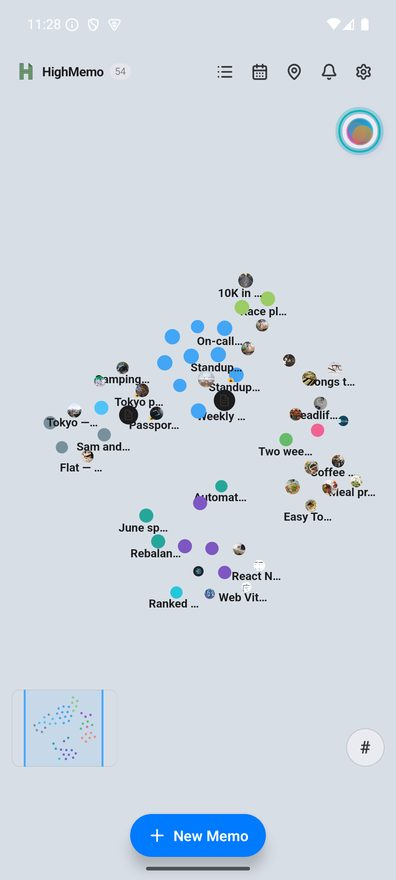
HighMemo opens onto the graph rather than a list. The number next to the HighMemo name is how many memos you have; tapping the name clears whatever you had open.
The toolbar, left to right
| Icon | Opens |
|---|---|
| List | The memo list, with search and filters — section 5 |
| Calendar | The month view with your reminders and, if connected, your events — section 12 |
| Map pin | Location Reminders — every memo that has a place, on one map |
| Bell, with a badge | The notification list — section 11 |
| Circular arrows | Sync now. Appears only once Google Drive sync is set up |
| Gear | Settings — section 16 |
Elsewhere on the screen
- New Memo at the bottom opens the composer.
- The circular button at the top right is the AI Assistant. Its left half also reports status — what the app is doing, and a progress bar while a model downloads.
- The small map at the bottom left is an overview of the whole graph; the visible area is outlined. Tap inside it to move around.
- The
#button at the bottom right switches between tag groups and individual memos.
3. Writing a memo #
Tap New Memo. The composer opens as a sheet from the bottom, with a title field and a body field. The body accepts Markdown — its placeholder says so: Supports Markdown. **bold**, *italic*, ## heading…
Tap Save to store it. Saving does not wait for anything: the memo is on your device the moment you tap Save, and any AI work happens afterwards in the background. If that work fails, nothing you already wrote is changed.
The formatting bar
A single row of buttons above the editor, scrollable sideways: B, I, S (strikethrough), inline code, H1 H2 H3, bullet list, numbered list, task list, quote, code block, divider, Date, link and image. Pinned at the right-hand end is a Preview / Edit toggle: Preview renders the Markdown, Edit returns to the raw text.
The composer's buttons
| Control | What it does |
|---|---|
| Calendar icon, in the header | Stamps today's date into the title. Only when creating, not when editing. |
| Expand / collapse, in the header | Grows the composer to fill the screen. |
| Image icon | Picks photos from your gallery, several at once. Android asks for media access the first time; if you refuse, the picker cannot open. |
| Document icon | Picks files to attach. |
| Microphone icon | Dictates into the body. Tap once to start, again to stop; the icon turns red and a waveform animates while it listens. Android asks to record audio the first time. |
| Bell icon | Sets a reminder. Appears when you are editing a memo that already exists — on a brand-new memo, save it first and use the clock icon in its detail view. |
| Amber clock icon | Appears only when an unsaved draft was left behind. Restores it. |
| Cancel / Save | Save is greyed out until there is text or an attachment. |
Dictation
HighMemo asks Android to recognise your speech on the device so that it works without a connection. Where Android cannot do that for the language in play, it falls back to Google's own online recognition — which means the audio is handled by Google under their terms, exactly as in any other app that uses Android's speech recogniser. Whether offline recognition is available depends on your Android version and on which language packs your device has installed.
Dictation was corrected just before this release so that it follows your device's language instead of a fixed one. If dictation transcribes into the wrong language on your device, that is worth reporting to highgarden0@gmail.com.
Drafts
An unfinished new memo is kept for you: after a few seconds without typing, Draft saved appears. Close the composer and the amber clock icon brings it back next time.
Attachments
Attached images and files appear as thumbnails above the composer's footer. Tap a thumbnail to insert a reference to it inline in the body; tap the small × on it to remove it before saving.
When you attach a photo, HighMemo reads what it can from the picture itself: the date it was taken, the camera and lens, and — if the photo carries GPS coordinates — the place, whose name is looked up so it can be shown to you.
HighMemo does not use an Android text-recognition engine. Text that lives inside a photo or a screenshot is read only if you have connected a cloud provider whose model can see images (section 13). None of the on-device models read images. With no such model, an image contributes nothing to the memo's tags and summary beyond whatever you type yourself.
Mentioning another memo or a person
Type @ in the body and a row of suggestions appears under the editor: people you have mentioned before, your memos, and — if the calendar is connected — your events. Pick one and it becomes a link inside the text. A new name can be created from the same row.
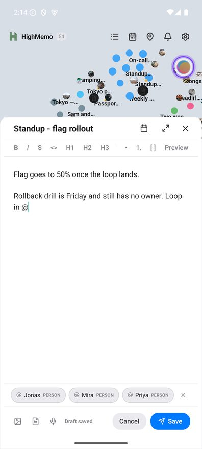
@ while you write and the people you have mentioned before come up.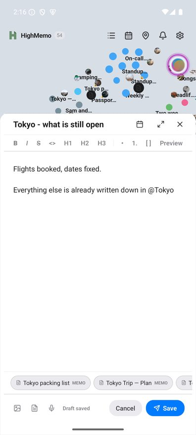
@ finds your own memos — type a name and pick the one you mean.A memo you mention this way is linked to the one you are writing, and that link is permanent in the way that matters: deleting the mention from the text does not delete the link, and no automatic rebuild ever removes it. Only you can.
A person works the other way round. There, the text is the record: take @Priya out of the body and Priya is no longer linked to that memo. Memo links outlive their mention; people links do not.
4. Sending things in from other apps #
HighMemo registers itself as a share target for text and images. In Chrome, Photos, Gmail or anything else with a Share button, tap Share and pick HighMemo. Android opens HighMemo with the new memo already showing.
A shared link is saved first and read afterwards, so it lands even on a bad connection. Once the page has been fetched, the memo fills in with the page's own title, the page's description as the summary, and its preview image as a thumbnail. Pages that do not publish those details still become a memo — the title is then derived from the page's own content and there is no thumbnail.
Sharing photos with no text alongside them produces a memo whose body notes how many you sent, ready for you to type over. Shared text that happens to be a link is treated as one.
Pages whose content is inside pictures
A page whose content lives inside its pictures — a social post, a card-news slide, a spec table saved as an image — arrives thinner on Android than it would on an iPhone or a Mac. HighMemo has no text-recognition engine on Android (section 3), so those pictures are not read for you. What the page publishes as text still becomes material, including any descriptions its author wrote for the pictures themselves.
Connecting a cloud model that can see images helps with a photo you attach to a memo, but it does not reach into a link's own pictures.
| Text inside a link's pictures | How | |
|---|---|---|
| Android | not read | No text-recognition engine on this platform. |
| iPhone and iPad | read | iOS's own text recognition. Nothing to set up. |
| Mac | read | macOS's own text recognition. Nothing to set up. |
5. The memo list, search and filters #
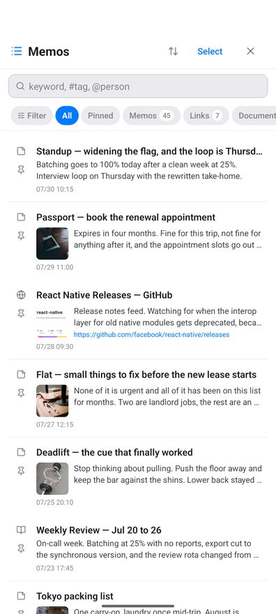
Search
The field's placeholder is its syntax: keyword, #tag, @person.
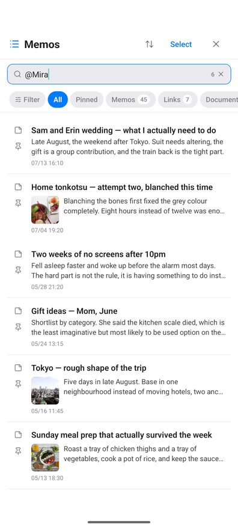
| You type | You get |
|---|---|
| Plain words | Memos whose title, body or tags contain what you typed, anywhere inside them. Case does not matter. |
#tag | Only memos carrying exactly that tag. Not a partial match — the whole tag name. |
@name | Only memos linked to exactly that person. Someone's name written in a body but not mentioned with @ will not match. |
The button on the left of the field switches between the two modes; in tag mode the placeholder becomes #tag name. Typing a # first switches for you.
Every memo is searched, not just recent ones. Once the on-device search model is ready, meaning-based matches are added to these results — nothing is taken away. Without the model you get exactly the keyword results. Meaning-based matching applies to plain words only, not to #tag or @name, which are meant to be exact.
Type chips
All, Pinned, Memos, Links, Documents and Reminders — each with a live count. Below them, chips for the tags you use most.
The Filter sheet
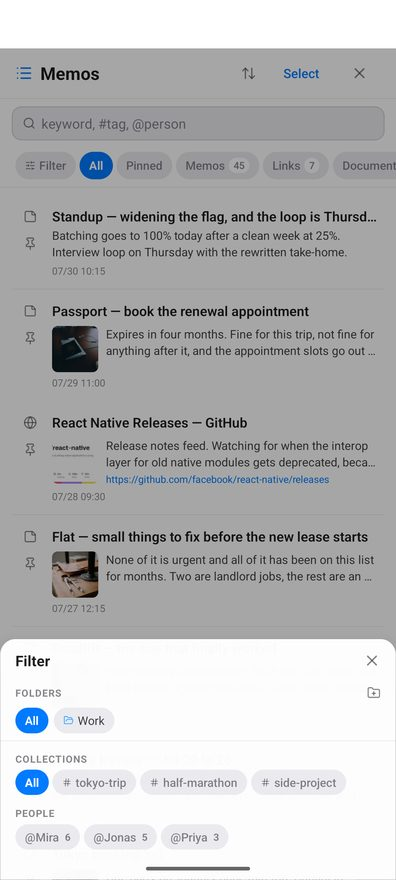
Filter opens three axes, and results update as you tap — there is no Apply button.
- Folders — with Create a folder when you have none.
- Collections — your shortlist of tags. It starts empty, with the hint Long-press a tag to pin it here.
- People — everyone you have mentioned, with a count each. Tapping one searches for them.
Clear all resets them. While a filter is on, a chip at the top of the list shows which — tap it to clear that one.
Sorting
Pinned First (the default), Newest or Updated.
Selecting several memos
Tap Select, tick memos, then Delete or Create Document (section 9).
Deleting one memo
Swipe a row to the left and a delete action appears. It asks for confirmation.
Pinning
Each row has a pin toggle on its left. Pinned memos are collected under the Pinned chip.
The ad row
An ad appears as a row in this list, about once every twenty memos, and never before the twentieth. It is labelled Sponsored. Ad requests carry no part of your memos.
6. Opening a memo #
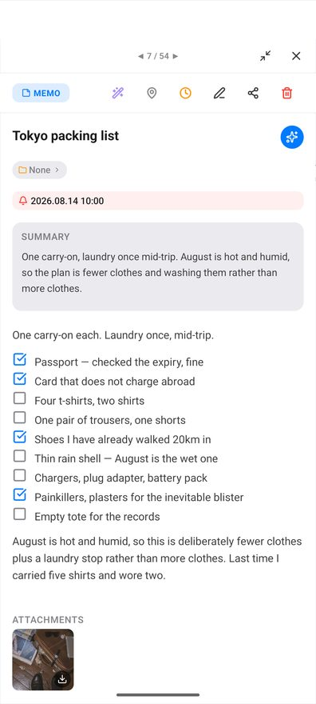
Tap a memo — in the list or on the graph — to open it. Swipe sideways to move to the next memo; the counter at the top shows your position.
The action row
| Icon | What it does |
|---|---|
| Wand (purple) | Runs the AI over this memo again — a new title, summary, tags and category. Needs an AI provider. If it fails, your existing title, summary and tags are kept. |
| Map pin | Attaches or changes a place, and with it a location reminder — section 11. |
| Clock (amber) | Attaches or changes a time reminder. |
| Pencil | Edits the memo. |
| Share | Sends the memo out through Android's share sheet. |
| Trash (red) | Deletes the memo, after confirming. |
The sections down the page
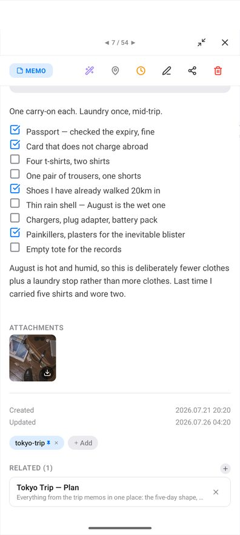
- Folder chip — which folder the memo is in, or None. Tap to move it, or make a new folder from there.
- Reminder chip — shown when a reminder is set, with its date, time and repeat.
- Summary — written by the AI. Absent until an AI provider has processed the memo.
- The body — rendered Markdown. Checklists are tappable.
- Attachments — tap an image to open it full screen (pinch to zoom, double-tap to zoom, swipe between images); Download saves it to your gallery. Tap a file to save it.
- Created / Updated — timestamps.
- Tags — chips, plus Add. Tap a chip to see everything carrying it; long-press to pin it as a Collection; the × removes it from this memo.
- Related — the memos you linked, including anything you brought in with
@. On a document this is called Sources, and those are the memos the AI reads when it writes it. - Recommend — memos that look similar, from the on-device search model. Empty until that model is ready. These are suggestions, not links.
- Auto-collect related memos — on a document only.
Editing in place
Tap the title to correct it. Double-tap the body to open the editor. Tapping a link follows it rather than opening the editor.
AI actions on one memo
The small circular button at the end of the title row opens Ask AI, Enhance, Summarize, Translate and Action items. Each needs an AI provider.
7. Tags, folders, pinning and people #
All four work with no account and no AI.
Tags
Tags arrive two ways: the AI adds them when it processes a memo, and you add them yourself with Add in the detail view. A tag is identified by its name, so a tag you type by hand and a tag the AI produced with the same word are the same tag — they cannot be duplicated.
To clean up in bulk, open Settings → Data & Storage → Tag Manager: a search field, a memo count per tag, tick several, Delete. Deleting there removes the tag from every memo that carried it, and it does not come back on the next sync.
Collections
Your shortlist of tags, in the Filter sheet. Long-press a tag chip on a memo to pin it there; long-press it in Collections to remove it.
Folders
Create folders in the Filter sheet under Folders. Long-press a folder to Rename or Delete it. A memo lives in one folder at a time, and folders do not nest.
People
Typing @ and creating a new name makes that person available everywhere. People appear as their own axis in the Filter sheet with a count each, and @name in the search box matches them exactly.
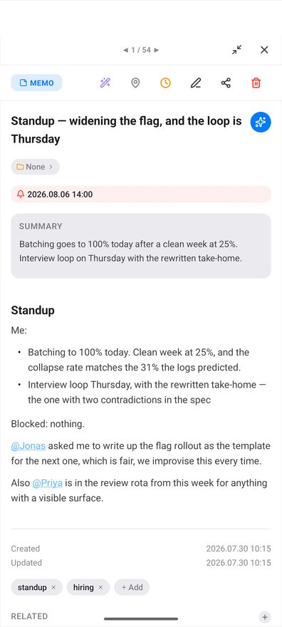
@ and every memo they are in is one tap away.8. The graph view #
Each dot is a memo. Memos that share a tag gather together, and the tag's name sits at the centre of the group. That grouping needs no AI, no account and no model — tags are enough. Memos that share no tag with anything collect under Uncategorized.
The graph draws no lines between memos. With thousands of memos there would be tens of thousands of lines, and on a mid-range phone the view would stop being usable — so the app shows relatedness as grouping instead. To see what a particular memo is connected to, open it and read Related (the links you made) and Recommend (similar memos) — section 6.
Gestures
- Drag to move, pinch to zoom, flick to keep gliding.
- Double-tap to step the zoom: in, in again, then out to fit everything.
- Tap a dot to open that memo.
- Tap a tag name to filter to that group and zoom to it. A pill at the top shows the tag; its × clears it.
- Use the overview map at the bottom left to jump somewhere far away.
- The
#button switches between tag groups and individual memos.
What you see as you zoom
Zoomed out you see tag names, not memos — the busiest groups first, then more of them as you zoom in. Past a certain point the tag names give way to the memos themselves, then to their titles, then to their thumbnails. Exactly one of the two is on screen at a time.
Dot colour follows the memo's category. A dashed pulsing ring means the AI has not finished with it yet.
9. Documents #
A document is a memo written from other memos.
- Open the memo list and tap Select.
- Tick the memos you want to draw from.
- Tap Create Document.
- The sheet asks What kind of document should these memos become? Type what you want — the placeholder suggests e.g. Weekly summary, Meeting notes… — and tap Create.
What you type decides the shape of the result, not just its title: ask for a weekly report and you get one organised by date; ask for a comparison and you get a table. The memos you ticked become the document's Sources.
The document is saved immediately with a placeholder and filled in behind you — Drafting document… then Document is ready!
Adding more memos later
Open the document and tap + beside Sources. The memo list reopens in a picking mode, with search and filters still working and memos already used left out. Confirm with Add n to document; the document is rewritten with them included. If you have edited it by hand, HighMemo warns you first.
Letting a document collect its own sources
Switch on Auto-collect related memos in the document. When you write something related, a banner offers to Add it. Nothing is added unless you tap.
Without an AI provider
You can still make a document. It will be your chosen memos gathered under headings — a tidy collection rather than a piece of writing. Connect an AI provider and regenerate to turn it into one.
10. AI Assistant #
![The AI Assistant panel on Android: a header reading AI Assistant with a model badge reading G Llama 3.1 8B, the prompt Recent trends shown as a sent message, an answer that groups memos into Work, Travel, Technology and Personal development with the matching memo titles listed under each and a closing line about what is trending, copy and add buttons under the answer, a caution that AI can make mistakes, a row of preset buttons reading For today, Recent trends and Knowledge gaps, and an input field reading Ask about your memos.](./img/android-dark-08_ai_assistant.jpg)
Open it with the circular button at the top right of the graph. It answers from your own memos, and needs an AI provider — with Text Rules Only selected, tapping it takes you to Settings instead.
Type into Ask about your memos…, or tap a preset. They change depending on whether a memo is in context:
| With no memo in context | With a memo in context |
|---|---|
| For today | About this memo |
| Recent trends — the last two weeks | Find related |
| Knowledge gaps — the last month | Enhance |
| Weekly summary — the last seven days | Action items |
| Random connection — three memos at random |
Reading an answer
Memos the answer drew on appear as chips you can tap to open, and tags as chips that open the list filtered to them. Under each answer: Copy, Save as Memo, Append to memo (checklists arrive as real checkboxes) and Translate. While an answer is streaming, the send button becomes a stop button. If your chosen model can read images, you can attach up to three.
The panel carries the line AI can make mistakes. Double-check important info.
If Google Calendar is connected, the titles of today's and tomorrow's events are included in what the assistant is told, so it can answer about your day. That means those titles go to whichever AI provider you configured.
11. Reminders #
Reminders work with nothing connected. Android 13 and later asks permission to post notifications the first time.
Time reminders
Open a memo and tap the clock icon. A sheet titled Reminder offers:
- In 1 hour · In 3 hours · Tomorrow morning · Next Monday — each showing what it works out to
- Custom… — pick a date, then a time
- Repeat — pick a time and one of No repeat, Daily, Weekly or Monthly
- Clear reminder
Those four repeat settings are the whole set. Weekly repeats on the weekday of the date you picked, and monthly on that day of the month.
Location reminders
Open a memo and tap the map pin. Search for a place or tap the map to drop the pin; the pins of your other location memos show as dots. Set the Radius — 100 m to 2 km, in 50 m steps, starting at 300 m — then Set Reminder.
When you arrive, the memo comes back. It fires once per visit: staying inside the area does not repeat it, and it re-arms when you leave. Setting one while you are already inside does not fire it immediately.
Arrival is decided by your device, and the notification is created on your device too.
Android asks for location access when you first attach a place. It then asks again, separately, for permission to use location all the time — Android deliberately splits these. Without the second one, arrival reminders will not fire while HighMemo is closed. You can change it later under Android Settings → Apps → HighMemo → Permissions → Location, where the option you want is Allow all the time.
Some manufacturers also apply their own battery restrictions to background apps. If arrival reminders are unreliable on your phone, exempting HighMemo from battery optimisation is the usual fix.
The notification list
The bell collects reminders that have fired, arrivals at a place, reminders still to come, and problems worth telling you about. The badge counts unread items; Read all clears it. Done marks a reminder dealt with, and system messages can be swiped away.
12. Calendar #
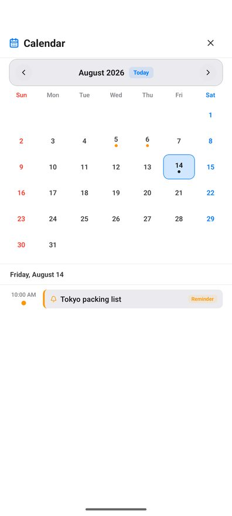
The calendar icon opens a month grid. Days with something on them carry a dot; tap a day to see it below, or swipe sideways to change month. Today jumps back. Your own reminders show here whether or not you connect anything, marked with a bell and a Reminder badge.
Connecting Google Calendar
Go to Settings → Sync & Services, connect Google (see section 15), then use Connect Calendar. Your calendars appear grouped by account, each with a checkbox — untick the ones you do not want. Add Calendar Account adds a second Google account for calendar only.
Access is read-only. HighMemo never creates, edits or deletes an event. Events cover about a month back and three months ahead, refresh roughly every 30 minutes while the app is open, and Sync Now forces it. What was already fetched stays readable offline.
Swiping sideways is not stopped at the edges of the fetched window, so you can keep going into months HighMemo has not asked Google about. Those months show nothing — which looks exactly like a month with nothing in it. If a month more than three ahead, or more than one behind, comes up blank, that is the window rather than your calendar. Your own memo reminders are not affected; they are stored on the phone and show in any month.
There is also a ceiling of 2,500 events per fetch. Inside a four-month window you are unlikely ever to meet it.
Events and memos together
- Add memo, under an event, starts a memo already attached to it. You do not have to expand the row first — the button is there on every Google event.
- When you save a memo, HighMemo suggests an event that looks related — a banner reading Link to "…"? with a Link button. Nothing is linked unless you tap it.
- A memo's linked events appear in its detail view, where you can add more or unlink one.
13. Setting up AI #
Two routes, and you can also take none. Either way, HighMemo has no server in the middle and no AI of its own.
Route 1 — a cloud provider, with your own key
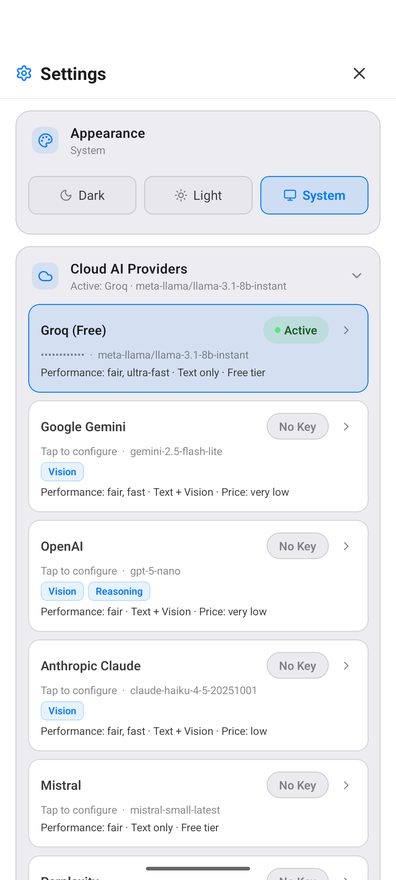
Open Settings → Cloud AI Providers, tap a provider, and paste the API key of an account you already have. Get API key → takes you to the right page if you do not. Saving a key selects that provider and its default model; Change under MODEL picks a different one.
| Provider | Default model |
|---|---|
| Groq (Free) | Llama 3.1 8B Instant |
| Google Gemini | Gemini 2.5 Flash Lite |
| OpenAI | GPT-5 nano |
| Anthropic Claude | Claude Haiku 4.5 |
| Mistral | Mistral Small |
| Perplexity | Sonar |
| Alibaba Qwen | Qwen Plus |
Providers whose card shows a Vision chip can also read your images. Requests go from your device straight to the provider you chose, under your key. Your key is stored on your device and is not included in anything HighMemo syncs.
Route 2 — a model that runs on the device
Under Settings → Local AI, On-device Models lists models you can download and run locally. No account, no key. Download one — sizes run from 0.8 GB to 2.5 GB, so use Wi-Fi; HighMemo warns you if you are on mobile data — then tap Ready to activate it. The badge becomes Active.
| Model | Download | Notes |
|---|---|---|
| Gemma 3 1B | 0.8 GB | Lightest |
| Qwen3 1.7B | 1.1 GB | Recommended |
| Qwen3.5 2B | 1.3 GB | |
| Kanana 1.5 2.1B | 1.5 GB | Korean-tuned |
| Phi-4-mini 3.8B | 2.5 GB | Heaviest text model |
| Gemma 4 E2B | 2.2 GB |
With one of these active, your memo text is processed on the device and does not leave it, and it works with no connection. Other things still use the network — ads, and syncing if you turned it on.
The trash icon on a downloaded model frees its space. Reload on the active model reloads it if it has stopped responding.
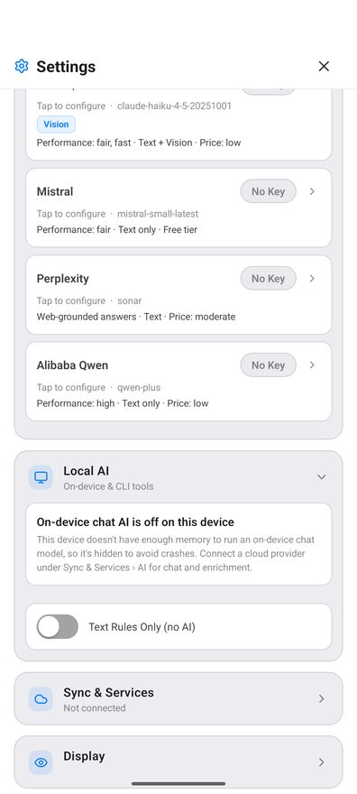
On Android, the on-device chat model is hidden when the device has less than 7 GB of memory or its hardware class is older than 2021 — a device with plenty of memory can still be hidden on age alone. On any platform it is also hidden if a first-run speed check finds it too slow. Semantic search keeps running on the device in those cases. Only on devices with very little memory (under about 4.5 GB) is on-device embedding switched off as well.
Where the list is hidden you get a card reading On-device chat AI is off on this device, pointing you at a cloud provider. This is a deliberate guard against crashing, not a fault. The card's own wording talks about memory even when the reason was the phone's age or the speed check.
If your phone falls short but you want to try anyway, that card offers Try small models anyway. It asks you to confirm, then shows only models up to 1.5 GB — so the list is genuinely shorter than the table above: the three largest, including all but one of the image-reading models, are not offered on that route. Turning it back off is in the same place. Phones with under about 4.5 GB of memory are excluded outright and this option is not offered at all.
Only the chat model is judged this strictly. Meaning-based search is judged separately and more leniently — see section 14.
Route 3 — no AI
Settings → Local AI → Text Rules Only (no AI) turns AI off entirely. Memos still get a title and short summary derived from their own text by a plain rule, with no model involved. This is also what happens before you configure anything.
What the AI produces
Once a provider is connected, every memo you save comes back — a few seconds later, in the background — with a title, a summary, tags and a category. The category is what colours the memo's dot on the graph.
The AI is asked to pick a category. The value is stored as it comes back, and the graph has colours for 15 of them — anything else takes a default colour. That is why an occasional dot is grey while its neighbours are not.
The categories with no colour of their own are kids, camping, fashion, pet, art and other.
If the AI fails or you are offline, your memo is untouched: existing titles, summaries and tags are kept rather than replaced. A message tells you it failed rather than leaving you guessing.
What language the AI writes in
Settings → Display → AI Language sets it. Auto is the default and follows the memo. Fourteen languages can be chosen explicitly: English, 한국어, 日本語, 中文, Español, Français, Deutsch, Português, Tiếng Việt, ไทย, Indonesia, العربية, Русский, हिन्दी. This affects AI output only — the interface stays in English.
14. The on-device search model #
Separate from everything in section 13, and much smaller. This model turns your memos into vectors so HighMemo can find things by meaning rather than by matching letters. It powers meaning-based search results and the Recommend list. It always runs on your device, whichever AI provider you use, and the vectors it produces are not sent anywhere.
The first-launch question
On the very first launch a dialog titled Improve search quality? offers the download — about 330 MB, Wi-Fi recommended — with Download and Not now.
- Download — it downloads in the background. The AI button shows progress. The app stays usable throughout.
- Not now — HighMemo does not download it, and remembers that answer. You will not be asked again, and it will not be fetched quietly later.
Getting it later, or checking on it
Go to Settings → Local AI → Semantic Search Model. The Embedding Model row says which state it is in — Ready — semantic search enabled, Downloading… n%, or Not downloaded — using keyword search — and offers a Download button when it is missing. Pressing that button is also what clears an earlier "Not now".
There is no on/off switch for meaning-based search. It works when the model is ready and does not when it is not.
One kind of phone never gets it: on a phone with very little memory — under about 4.5 GB — this model is switched off along with the chat models of section 13, so the first-launch question does not appear and search matches letters. Phones held back only by the 7 GB rule, the 2021 rule or the speed check do run it.
The semantic index
Below it, Semantic Index reports how many memos have been indexed. Indexing happens on its own after the model is ready, but you can drive it: Index n or Build processes what is outstanding, Rebuild starts over, Stop halts a run. These are greyed out until the model is ready. Until a memo is indexed it is still found by keyword.
15. Sync with your Google Drive #
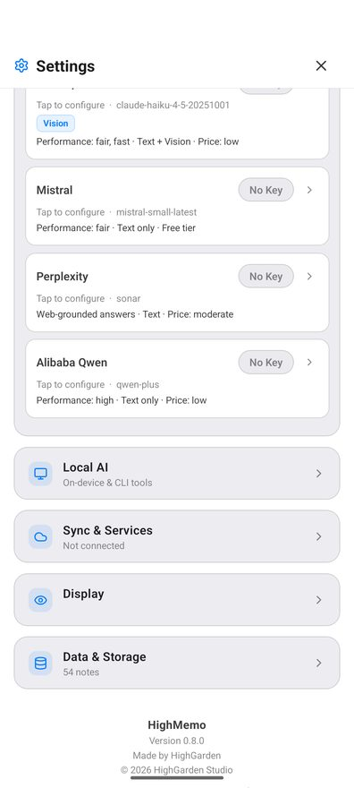
Connect a Google account and your phone and Mac see the same memos. They are stored in your own Google Drive app-data folder — a private per-app area of your Drive. There is no HighMemo server and no HighMemo account, so nobody at HighMemo can look at them. Images and attachments travel too.
Turning it on
- Settings → Sync & Services → Cloud Sync and choose Google.
- Tap Connect Google and sign in.
Connecting sync requests app-data folder access and read-only calendar access in the same consent screen. There is no way to grant only one. If you want sync but not the calendar, simply do not connect the calendar afterwards — HighMemo will not read your events until you do.
When it runs
When you open the app, and every 5 minutes while it is open. Sync Now — in Settings or the toolbar — runs it immediately. There is no background sync while the app is closed, and no interval to configure. The card shows Status and Last sync.
That 5-minute cycle exists only while Drive sync is actually set up and signed in. If it is not — no provider chosen, or the sign-in has expired — there is no slow sync going on in the background: nothing is scheduled at all. So a stale Last sync is worth reading as "check that it is still connected" rather than "wait longer".
What happens when two devices disagree
The newer edit of a memo wins; you do not get a merge conflict to resolve. Nothing is deleted by syncing — a deletion travels only when you actually deleted something.
Turning it off, and deleting what was uploaded
Disconnect stops all uploads and signs the account out. That does not delete the copy already in your Drive. To remove that, revoke HighMemo in your Google Account permissions — which deletes the app-data folder.
If sync starts failing
A stale sign-in shows as an error and a message that the session expired. Disconnect and Connect Google again.
16. Settings reference #
The gear icon in the toolbar. Sections in the order they appear.
Appearance
Dark / Light / System.
Cloud AI Providers
The seven providers, their keys and models — section 13.
Local AI
- Semantic Search Model — the search model and the semantic index (section 14).
- On-device Models — download and activate a local model. Hidden on phones that cannot run one, where the card offers Try small models anyway instead.
- Refresh Models — re-checks what is installed.
- Text Rules Only (no AI) — no model at all.
Sync & Services
- Cloud Sync — None or Google, then the Drive card with Sync Now and Disconnect (section 15).
- Calendar (read-only) — appears once Google is connected (section 12).
Display
AI Language — the language the AI writes in. Default Auto.
Data & Storage
- Total Memos and Storage Estimate — read-only.
- Tag Manager — search, select and delete tags in bulk.
- Export data / Import data / Reset All Data — section 17.
About
Version number, Open Source Licenses (searchable), and a link to this site's privacy policy.
- No sync passphrase. There is no encryption control in the app.
- No switch for meaning-based search. It follows the model's state.
- No ad settings. There is no paid or ad-free version.
- No location section. Location permission is asked for at the map, per memo.
- No sync interval. Sync runs on open and every 5 minutes while open.
17. Export, import and reset #
Export
Settings → Data & Storage → Export data writes a single JSON file named HighMemo-backup-date-time.json and opens Android's share sheet so you can put it wherever you like. It contains memos, tags, folders, links and your attached photos embedded in the file itself.
One exception worth knowing: thumbnails that came from a shared web page are stored as the web address they came from, so they are references rather than embedded copies.
There is no Markdown or PDF export. JSON is the only format.
Your API keys, your chosen provider, your language and appearance, and any downloaded models are not in the backup. It is your content, not your configuration.
Import
Import data reads a backup file back in and merges it. Nothing is deleted by importing, matching items update to the newer version, and re-importing the same file does not create duplicates.
Reset All Data
Deletes every memo, tag, folder and link, on this device and in your Drive copy including uploaded images. It asks for confirmation first. It deliberately keeps your settings, API keys, Google connection, language and appearance — it clears content, not configuration.
18. Permissions and what leaves the device #
| Android asks for | When | If you refuse |
|---|---|---|
| Photos and media | First time you attach a photo | The picker cannot open. Everything else works. |
| Microphone | First time you use dictation | Dictation is unavailable. Typing is unaffected. |
| Notifications | First time you set a reminder (Android 13 and later) | Reminders will not reach you. |
| Location | First time you attach a place to a memo | Location reminders cannot fire. Nothing else changes. |
| Location, all the time | A second, separate request after the first | Arrival reminders only work while HighMemo is open. |
HighMemo also declares permission to schedule exact alarms, so a reminder arrives at the minute you set rather than whenever Android next feels like it, and to restart its reminders after you reboot.
Ads and your advertising ID
Ads are served by Google AdMob. You can reset or delete your advertising ID under Android Settings → Privacy → Ads; deleting it stops apps receiving an identifier. Ads are still shown either way. In the EEA, the UK and Switzerland a Google-certified consent form is shown before any ad is requested, and your answer there is what applies.
The short version of what goes out
With nothing connected: ad requests, and — if a photo you attach carries GPS coordinates in its metadata — a lookup of those coordinates against OpenStreetMap's naming service so the place can be named. Everything else is on your device until you connect something.
The full account, including what each AI provider receives, is in the privacy policy.
19. Troubleshooting #
| What you see | Why, and what to do |
|---|---|
| Memos have no summary, tags or category | No AI provider is connected. Section 13. Existing memos get them when you tap the wand icon in the detail view. |
| A screenshot's text is ignored | Android has no built-in text reading here. Configure a model that can see images — section 13. |
| Recommend is always empty | The on-device search model is not ready. Check Settings → Local AI → Semantic Search Model. Related is separate and only ever holds links you made yourself. |
| The graph shows no lines | By design on Android. Section 8. |
| The on-device model list is missing | Your phone is below the memory or the age threshold, or the first-run speed check found it too slow. Use a cloud provider, or Try small models anyway — section 13. |
| A local model crashes or stalls | Pick a smaller one, or Reload the active model. Under about 4.5 GB of RAM, local models are not offered at all. |
| A location reminder never fires | Location is probably not set to Allow all the time. Check that first, then battery optimisation. Section 11. |
| Reminders arrive late | Your phone's battery saver is likely delaying the app. Exempt HighMemo from battery optimisation. |
| Sync says the session expired | Disconnect then Connect Google again. |
| Your Mac and phone disagree | Sync runs on open and every 5 minutes while open. Tap Sync Now on both. |
| A memo shows a dashed ring on the graph | The AI has not finished with it. It goes away by itself. |
| The 330 MB download never started | You chose Not now, which is remembered. Press Download under Settings → Local AI → Semantic Search Model. |
Anything else: highgarden0@gmail.com.